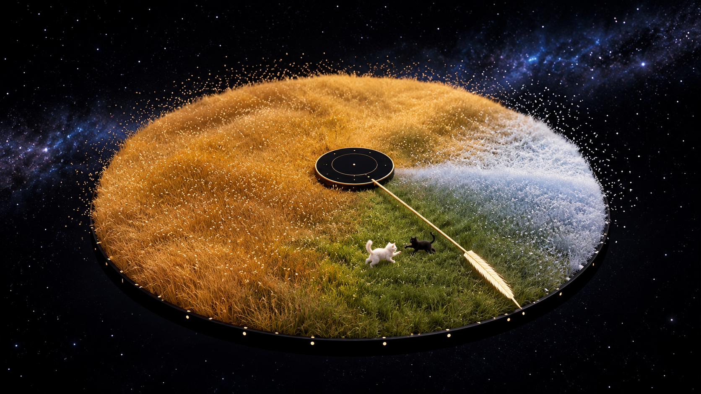

Merry Christmas

ARTWORK REFERENCE
Four seasons. Two little companions.
The web view animates continuously. iPad Lock Screen motion uses a compatible Live Photo and plays on wake; a web page or MP4 cannot be installed directly as an animated system wallpaper. Double-tap the scene to show or hide controls.